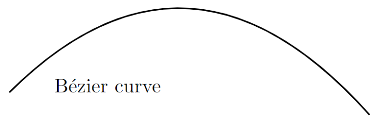

Picture environment
Introduction
LaTeX’s built-in picture environment can be used to create diagrams/figures—you don’t need to load any external packages to use it, but packages such as pict2e and picture have been written to enhance or improve its features.
This article provides a concise introduction to the picture environment and all examples use the pict2e package. More extensive documentation and a range of helpful examples are readily available within the following resources:
- LaTeX2e unofficial reference manual
- The Not So Short Introduction to LaTeX2ε (see Chapter 5)
- Wikibooks
- questions tagged
picture-modeon tex.stackexchange pict2epackage documentation
When compared to powerful and sophisticated graphics tools such as TikZ/PGF, MetaPost, PSTricks or Asymptote the picture environment may seem quite limited but, from time-to-time, it might be sufficient for what you need to do.
Creating a new picture
Creating a new picture usually involves the following steps:
- define the size of the drawing units you wish to use;
- declare a
pictureenvironment which defines the picture size; - draw the individual graphic components using the
\put,\multiputor\qbeziercommands.
Define the size of the drawing units
To create a picture you normally start by setting the drawing units via the command \unitlength, which must be used outside a picture environment. For example, if you write
\setlength{\unitlength}{1cm}
the drawing units would be interpreted as multiples of 1cm. The default unit is 1pt.
Define the size of your picture
The general form of the picture environment is as follows
\begin{picture}(width, height)(Xoffset, Yoffset)
...
\end{picture}
where
widthandheightare values, in units of\unitlength, which define the size of the picture. LaTeX uses these values to create a box whose dimensions are- box (picture) width =
width×\unitlength - box (picture) height =
height×\unitlength
- box (picture) width =
(Xoffset, Yoffset)is an optional coordinate which sets the origin (bottom-left corner) of the picture, expressed as an offset relative to the default location.XoffsetandYoffsetare also expressed in units determined by the current value of\unitlength.
Note that Xoffset and Yoffset do not affect the amount of space that LaTeX reserves; i.e., the box dimensions.
Understanding the picture dimensions
We’ll create two pictures, both using \setlength{\unitlength}{1cm} and each with a width and height of 3 units.
The first picture uses the default origin of (0,0):
\begin{picture}(3,3)
...
\end{picture}
the second picture offsets (shifts) the origin by (1,1):
\begin{picture}(3,3)(1,1)
...
\end{picture}
Drawing graphics
Graphics are created using a sequence of \put, \multiput, or \qbezier commands which produce the individual “components” (or “objects”) from which the picture or illustration is constructed:
\put(x, y){component}draws thecomponentat location(x, y).
\multiput(x, y)(dx, dy){n}{component}draws thecomponentntimes: starting at location(x, y)and repeatedly translating by(dx, dy)to redraw thecomponent.
\qbezier[n](x1, y1)(x, y)(x2, y2): draws a quadratic Bézier curve where:nan optional integer which determines the number of points used plot/produce the curve(x1, y1)is the curve’s start point(x2, y2)is the curve’s end point(x, y)denotes the (quadratic) Bézier curve control point
A component is a graphical element usually produced using graphics primitives such as \line, \oval, \circle, \vector and so forth—see the LaTeX2e unofficial reference manual or The Not So Short Introduction to LaTeX2ε (Chapter 5) for details of the available primitives.
Note: The pict2e package extends the original picture environment to provide several commands for drawing Bézier curves: \bezier, \qbezier, \cbezier and \qbeziermax.
Understanding the offset and origin
In the following examples the \put command is used to draw coloured dots which indicate key coordinates (positions) in the graphic. Both examples use LaTeX’s \fbox command to draw a border around the box LaTeX created to contain our picture, showing the bounding box of the graphic.
Example 1: Using the default origin
\documentclass{article}
\usepackage[pdftex]{pict2e}
\usepackage[dvipsnames]{xcolor}
\begin{document}
\setlength{\unitlength}{1cm}
\setlength{\fboxsep}{0pt}
This is my picture\fbox{%
\begin{picture}(3,3)
\put(0,0){{\color{blue}\circle*{0.25}}\hbox{\kern3pt \texttt{(0,0)}}}
\put(3,3){{\color{red}\circle*{0.25}}\hbox{\kern3pt \texttt{(3,3)}}}
\end{picture}}
\end{document}
This example produces the following output:
The \fbox command draws a border around the bounding box of the graphic, showing the space (area) reserved by LaTeX:
- picture width =
width×\unitlength= 3 × 1cm = 3cm. - picture height =
height×\unitlength= 3 × 1cm = 3cm.
The first example shows that the origin, (0,0), is at the point the \begin{picture} command was executed, immediately after the text “This is my picture”. In addition, the top-right corner is at position (3,3), the (width,height) values provided to \begin{picture}(3,3).
Example 2: Shifting the origin by (1,1)
\documentclass{article}
\usepackage[pdftex]{pict2e}
\usepackage[dvipsnames]{xcolor}
\begin{document}
\setlength{\unitlength}{1cm}
\setlength{\fboxsep}{0pt}
This is my picture\fbox{%
\begin{picture}(3,3)(1,1)
\put(0,0){{\color{blue}\circle*{0.25}}\hbox{\kern3pt\texttt{(0,0)}}}
\put(1,1){{\color{orange}\circle*{0.25}}\hbox{\kern3pt\texttt{(1,1)}}}
\put(3,3){{\color{red}\circle*{0.25}}\hbox{\kern3pt\texttt{(3,3)}}}
\put(4,4){{\color{black}\circle*{0.25}}\hbox{\kern3pt\texttt{(4,4)}}}
\end{picture}}
\end{document}
This example produces the following output:
The second example shows the effects of shifting the origin and highlights some key points:
- the border created by
\fboxshows that the bounding box of the graphic, the width and height of the box created by LaTeX, is unaffected by shifting the origin: it is still determined by the(width,height)values provided to\begin{picture}(3,3)(1,1)- picture width =
width×\unitlength= 3 × 1cm = 3cm - picture height =
height×\unitlength= 3 × 1cm = 3cm
- picture width =
- the drawing elements are not restricted (clipped) to the area (bounding box dimensions) created by LaTeX. For example, the blue dot and
(0,0)coordinate are drawn outside the boundary line produced by\fbox, which indicates the bounding box.- It is up to the user to ensure the drawing elements stay within the bounding box and do not overlay any surrounding text.
- the origin,
(0,0), is no longer located immediately after the text “This is my picture”, at the point the\begin{picture}command was executed: the origin is now shifted 1 unit to the left and 1 unit downwards - the top-right corner is now at position
(4,4)
Examples of the picture environment
Examples from the LaTeX2e unofficial reference manual
The LaTeX2e unofficial reference manual contains a number of picture environment examples, some of which are reproduced here together with links which open them in Overleaf, allowing you to edit and explore the code.
Example 1: the \vector command
\documentclass{article}
\usepackage[pdftex]{pict2e}
\begin{document}
\setlength{\unitlength}{1cm}
\begin{picture}(6,6) % picture box will be 6cm wide by 6cm tall
\put(0,0){\vector(2,1){4}} % for every 2 over this vector goes 1 up
\put(2,1){\makebox(0,0)[l]{\ first leg}}
\put(4,2){\vector(1,2){2}}
\put(5,4){\makebox(0,0)[l]{\ second leg}}
\put(0,0){\vector(1,1){6}}
\put(3,3){\makebox(0,0)[r]{sum\ }}
\end{picture}
\end{document}
This example produces the following output:
Example 2: the \qbezier, \line, \vector, \thinlines and \thicklines commands
Note how the \qbezier command is not used within \put{...} whereas other primitive commands, such as \line, \vector are used within \put{...}.
\documentclass{article}
\usepackage[pdftex]{pict2e}
\begin{document}
\setlength{\unitlength}{1cm}
\begin{picture}(8,4)
\thinlines % Start with thin lines
\put(0,0){\vector(1,0){8}} % x axis
\put(0,0){\vector(0,1){4}} % y axis
\put(2,0){\line(0,1){3}} % left side
\put(4,0){\line(0,1){3.5}} % right side
\thicklines % Use thicker lines for the \qbezier commands
\qbezier(2,3)(2.5,2.9)(3,3.25)
\qbezier(3,3.25)(3.5,3.6)(4,3.5)
\thinlines % Back to using thin lines
\put(2,3){\line(4,1){2}}
\put(4.5,2.5){\framebox{Trapezoidal Rule}}
\end{picture}
\end{document}
This example produces the following output:
Example 3: the \multiput and \linethickness commands
\documentclass{article}
\usepackage[pdftex]{pict2e}
\begin{document}
\setlength{\unitlength}{1cm}
\thicklines
\begin{picture}(10,10)
\linethickness{0.05mm}
\multiput(0,0)(1,0){10}{\line(0,1){10}}
\multiput(0,0)(0,1){10}{\line(1,0){10}}
\linethickness{0.5mm}
\multiput(0,0)(5,0){3}{\line(0,1){10}}
\multiput(0,0)(0,5){3}{\line(1,0){10}}
\end{picture}
\end{document}
This example produces the following output:
Other examples
A basic Bézier curve
The following example uses the \qbezier command to draw a Bézier curve:
\qbezier(1,1)(5,5)(9,0.5)
Note the following:
- the
\qbeziercommand is not used within a\putcommand - the Bézier curve start point is
(1,1) - the Bézier curve end point is
(9,0.5) - the Bézier curve control point is
(5,5) - we do not use the optional integer which determines the number of points used plot/produce the Bézier curve
\documentclass{article}
\usepackage[pdftex]{pict2e}
\begin{document}
\setlength{\unitlength}{0.8cm}
\begin{picture}(10,5)
\thicklines
\qbezier(1,1)(5,5)(9,0.5)
\put(2,1){{Bézier curve}}
\end{picture}
\end{document}
This example produces the following output:

Ovals, lines and circles
The following example demonstrates the \line, \circle and \oval commands and—note how they are all used within the \put{...} command:
\documentclass{article}
\usepackage[pdftex]{pict2e}
\begin{document}
\setlength{\unitlength}{1cm}
\thicklines
\begin{picture}(10,6)
\put(2,2.2){\line(1,0){6}}
\put(2,2.2){\circle{2}}
\put(6,2.2){\oval(4,2)[r]}
\end{picture}
\end{document}
This example produces the following output:
Below is a description of the commands:
\put(2,2.2){\line(1,0){6}}: draws a line6units long using the “direction vector”(1,0)\put(6,2.2){\oval(4,2)[r]}: draws an oval centred in the point(4,2). The parameter[r]is optional, you can user,l,tandbto show the right, left, top or bottom part of the oval.\put(2,2.2){\circle{2}}: draws a circle centred at the point(2,2.2)and whose diameter is2.
Combining lines, circles and text
Different basic elements can be combined to create more complex pictures. In this example several lines and circles are combined to create a picture, together with text to label the points:
\documentclass{article}
\usepackage[pdftex]{pict2e}
\begin{document}
\setlength{\unitlength}{0.8cm}
\begin{picture}(12,4)
\thicklines
\put(8,3.3){{\footnotesize $3$-simplex}}
\put(9,3){\circle*{0.1}}
\put(8.3,2.9){$a_2$}
\put(8,1){\circle*{0.1}}
\put(7.7,0.5){$a_0$}
\put(10,1){\circle*{0.1}}
\put(9.7,0.5){$a_1$}
\put(11,1.66){\circle*{0.1}}
\put(11.1,1.5){$a_3$}
\put(9,3){\line(3,-2){2}}
\put(10,1){\line(3,2){1}}
\put(8,1){\line(1,0){2}}
\put(8,1){\line(1,2){1}}
\put(10,1){\line(-1,2){1}}
\end{picture}
\end{document}
This example produces the following output:
Here is a summary of some commands used:
\thicklines: this increases the thickness of the lines. The\thinlinescommand has the opposite effect.\put(8,3.3){{\footnotesize $3$-simplex}}: the text “3-simplex” is inserted at the point(8,3.3), the font size is set to\footnotesize. The same command is used to label each point.\put(9,3){\circle*{0.1}}: this draws a filled circle, centred at(9,3)with a small diameter of0.1(drawing unit) so it can be used as a point.\put(10,1){\line(3,2){1}}: creates a straight line starting at(10,1)and drawn in the direction of(3,2)with a length of 1 (drawing unit).
Using arrows
Arrows can also be used inside a picture environment so here is a second example:
\documentclass{article}
\usepackage[pdftex]{pict2e}
\begin{document}
\setlength{\unitlength}{0.20mm}
\begin{picture}(400,250)
\put(75,10){\line(1,0){130}}
\put(75,50){\line(1,0){130}}
\put(75,200){\line(1,0){130}}
\put(120,200){\vector(0,-1){150}}
\put(190,200){\vector(0,-1){190}}
\put(97,120){$\alpha$}
\put(170,120){$\beta$}
\put(220,195){upper state}
\put(220,45){lower state 1}
\put(220,5){lower state 2}
\end{picture}
\end{document}
This example produces the following output:

The \vector command uses the same syntax as \line:
\put(120,200){\vector(0,-1){150}}: draws a vector whose start point is(120,200), length is150and the drawing direction is(0,-1).
Further reading
For more information see the following resources:
Overleaf guides
- Creating a document in Overleaf
- Uploading a project
- Copying a project
- Creating a project from a template
- Using the Overleaf project menu
- Including images in Overleaf
- Exporting your work from Overleaf
- Working offline in Overleaf
- Using Track Changes in Overleaf
- Using bibliographies in Overleaf
- Sharing your work with others
- Using the History feature
- Debugging Compilation timeout errors
- How-to guides
- Guide to Overleaf’s premium features
LaTeX Basics
- Creating your first LaTeX document
- Choosing a LaTeX Compiler
- Paragraphs and new lines
- Bold, italics and underlining
- Lists
- Errors
Mathematics
- Mathematical expressions
- Subscripts and superscripts
- Brackets and Parentheses
- Matrices
- Fractions and Binomials
- Aligning equations
- Operators
- Spacing in math mode
- Integrals, sums and limits
- Display style in math mode
- List of Greek letters and math symbols
- Mathematical fonts
- Using the Symbol Palette in Overleaf
Figures and tables
- Inserting Images
- Tables
- Positioning Images and Tables
- Lists of Tables and Figures
- Drawing Diagrams Directly in LaTeX
- TikZ package
References and Citations
- Bibliography management with bibtex
- Bibliography management with natbib
- Bibliography management with biblatex
- Bibtex bibliography styles
- Natbib bibliography styles
- Natbib citation styles
- Biblatex bibliography styles
- Biblatex citation styles
Languages
- Multilingual typesetting on Overleaf using polyglossia and fontspec
- Multilingual typesetting on Overleaf using babel and fontspec
- International language support
- Quotations and quotation marks
- Arabic
- Chinese
- French
- German
- Greek
- Italian
- Japanese
- Korean
- Portuguese
- Russian
- Spanish
Document structure
- Sections and chapters
- Table of contents
- Cross referencing sections, equations and floats
- Indices
- Glossaries
- Nomenclatures
- Management in a large project
- Multi-file LaTeX projects
- Hyperlinks
Formatting
- Lengths in LaTeX
- Headers and footers
- Page numbering
- Paragraph formatting
- Line breaks and blank spaces
- Text alignment
- Page size and margins
- Single sided and double sided documents
- Multiple columns
- Counters
- Code listing
- Code Highlighting with minted
- Using colours in LaTeX
- Footnotes
- Margin notes
Fonts
Presentations
Commands
Field specific
- Theorems and proofs
- Chemistry formulae
- Feynman diagrams
- Molecular orbital diagrams
- Chess notation
- Knitting patterns
- CircuiTikz package
- Pgfplots package
- Typesetting exams in LaTeX
- Knitr
- Attribute Value Matrices
Class files
- Understanding packages and class files
- List of packages and class files
- Writing your own package
- Writing your own class